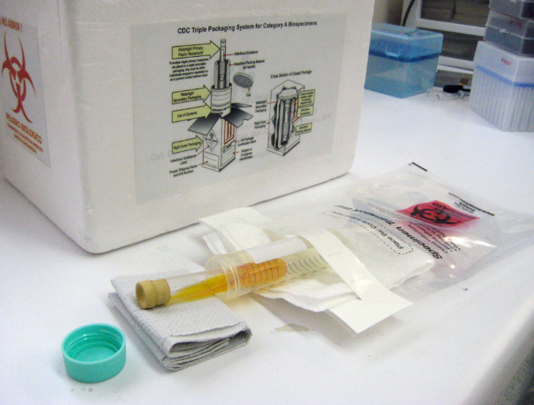
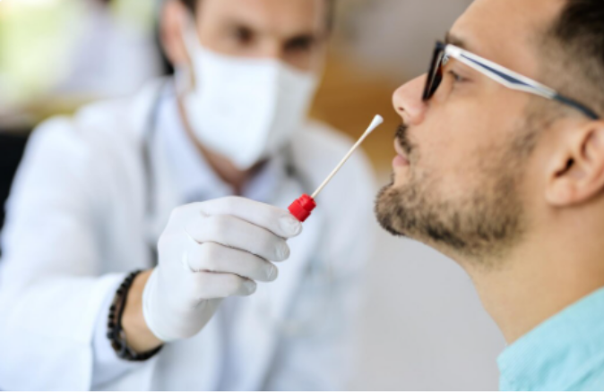

Aula 1
Fase pré-analítica dos métodos de diagnóstico
O transporte de amostras biológicas aos centros laboratoriais faz parte da fase pré-clínica do processo operacional de exames laboratoriais. Todos os dias, milhares de amostras são encaminhadas para laboratórios e, para que o centro diagnóstico possa fornecer resultados precisos e confiáveis, alguns fatores — como profissional altamente qualificado, amostras devidamente coletadas e conservadas — precisam ser levados em consideração.
Entende-se como amostra biológica adequada aquela obtida em quantidade suficiente, transferida em recipiente apropriado, corretamente identificada, conservada e transportada. Todos esses fatores tornam possível um diagnóstico preciso e correto.

Fotografia de um ambiente de laboratório com materiais utilizados para coleta, acondicionamento e transporte de amostras biológicas.Em primeiro plano há um tubo plástico contendo líquido amarelado, envolvido por um pano branco e uma embalagem de segurança. Também há uma tampa plástica verde solta sobre a bancada.
Ao fundo, há uma caixa branca de transporte identificada com instruções de embalagem para biossegurança.
Na parte inferior da imagem há uma faixa marrom com a legenda: “Exemplo de amostra biológica”.
Exemplo de amostra biológica
A coleta e o transporte adequados de material biológico visa eliminar possíveis riscos de exposição aos microrganismos patogênicos durante as atividades relacionadas ao transporte do material biológico.
Logo, o nosso curso tem como objetivo enfatizar a importância de uma coleta amostral adequada, bem como de um transporte seguro e eficiente até o destino. É importante que toda coleta e transporte de amostras atenda às exigências normativas que regulamentam esse setor, tais como:
- Resolução da Diretoria Colegiada (RDC) nº 504/2021 da Agência Nacional de Vigilância Sanitária (Anvisa), que estabelece normas para o transporte de amostras biológicas de origem humana bem como questões de Vigilância Sanitária.
- Manual de Vigilância Sanitária sobre o transporte de material biológico humano para fins de diagnóstico (Anvisa), que objetiva definir e estabelecer padrões sanitários para o transporte de material biológico de origem humana em suas diferentes modalidades e formas.
- Manual de coleta em laboratório clínico do Programa Nacional de Controle de Qualidade (PNCQ) que discute as boas práticas de coleta e transporte de material biológico no âmbito clínico.
Procedimentos gerais de coleta
Com base nas exigências normativas, a realização de coleta das amostras biológicas segue protocolos específicos e para isso é necessário:
- Realizar o preenchimento do formulário de coleta contendo, ao menos, nome completo e sem abreviaturas, idade e data de nascimento do paciente, nome do profissional solicitante, número de identificação, data e hora da coleta e exames solicitados.
- Identificar o paciente perguntado seu nome e confirmar com a identificação no formulário. Em caso de crianças, confirmar o nome com o acompanhante ou verificar o bracelete de identificação.
- Certificar-se de que o paciente obedece às condições necessárias para o exame, como estar em jejum quando necessário, não estar usando antifúngicos etc. O paciente precisa compreender as perguntas realizadas, portanto, certifique-se de que ele esteja entendendo.
- Examinar se algum material de coleta apresenta defeitos ou se está fora do prazo de validade. Após a verificação, os materiais deverão ser identificados.
É importante ressaltar que toda coleta deve ser feita com o paciente acordado. Caso esteja dormindo, o profissional precisa acordá-lo. Atenção para movimentos involuntários em pacientes inconscientes ou semicomatosos. Recomenda-se alguma contenção durante a prática de coleta.
• Coleta de sangue, soro e plasma
O sangue deve ser coletado e transferido em um tubo plástico estéril, contendo o anticoagulante recomendado para a realização do exame e hermeticamente fechado. É necessário inverter, gentilmente, os tubos (quantidade a depender do anticoagulante utilizado) logo após a coleta sanguínea (temperatura ambiente).
Já para a coleta do soro é preciso realizar a coleta do sangue em tubo plástico estéril e sem coagulante. Após a coleta, aguardar até a coagulação do sangue e centrifugar a 3.000 rpm por 10 minutos a fim de separar o soro. Se não for possível realizar a centrifugação, basta deixar retrair o coágulo totalmente e aliquotar o soro separado. O soro deverá ser transferido para outro tubo estéril e hermeticamente fechado.
Para a coleta do plasma deve-se coletar o sangue em tubo estéril com o anticoagulante recomendado para a realização do exame. Após a coleta, realizar a centrifugação e aliquotar o plasma formado em tubo estéril. Na impossibilidade de realizar a centrifugação, deixar retrair o coágulo da amostra e aliquotar o plasma separado.
Em casos de emergência/urgência colocar os tubos em banho-maria a 37 °C por 20 a 30 minutos para acelerar o processo de coagulação.
• Informações importantes sobre a hemocultura
Para suspeitas de sepse a coleta deve ser realizada, preferencialmente, por punção venosa periférica. A coleta por cateter é indicada apenas em caso de suspeita de infecção relacionada ao dispositivo.
— Punções arteriais não são apropriadas e acabam dificultado o isolamento do microrganismo.
— Não se recomenda a troca de agulhas entre a coleta e a distribuição do sangue nos frascos específicos.
No momento da coleta de sangue, o profissional deve seguir as normas de assepsia local e, após prática asséptica, realizar a coleta do sangue ao ponto de ocupar 10% do volume total do frasco de hemocultura (prestar atenção às normas de cada fabricante).
É importante ressaltar a dificuldade de isolar o patógeno na corrente sanguínea; por conta desse fato, quanto maior a quantidade amostral melhor será a probabilidade de isolar o microrganismo, mas cuidado, pois a quantidade excessiva de amostra pode resultar na inibição do crescimento do patógeno, visto que os componentes nutricionais presentes no meio de cultivo serão diluídos. Assim, frascos que possibilitem coleta de até 10 mL são os mais indicados.
Uma quantidade de duas e não mais do que quatro frascos devem ser coletados a fim de aumentar a probabilidade de isolar o patógeno.
A coleta deve ser feita, se possível, antes do início do uso de antifúngicos. No entanto, caso o paciente já esteja fazendo uso deles, a coleta deve ser realizada quando anteceder à administração seguinte do medicamento.
Evite realizar a coleta no auge do momento febril do paciente, visto que, nessa etapa clínica, o sistema imune está tentando combater os microrganismos; por esse motivo, a quantidade de patógenos viáveis pode estar baixa.
Portanto, realize sempre a coleta logo no início do pico febril. Ao coletar sangue periférico com sangue do cateter, tais coletas devem ser feitas em momentos próximos e em volumes iguais para diferenciar uma infecção da corrente sanguínea relacionada ao cateter da infecção da corrente sanguínea relacionada a outros focos de infecção.
• Armazenamento e transporte
As amostras de sangue, plasma e soro devem ser armazenadas em temperatura ambiente, em local protegido da luz e com baixa umidade. Devem ser transportadas em contêineres plásticos apropriados, com segurança, o mais rapidamente possível, até os setores responsáveis pela execução dos testes. Caso o resfriamento não seja indicado, as amostras devem ser transportadas em temperatura ambiente. Os tubos contendo as amostras biológicas devem ser transportados na posição vertical e vedados (tampados), a fim de evitar derramamento.
Para hemocultura, o frasco deve ser mantido em temperatura ambiente até seu uso; após a inserção de amostra biológica, o frasco deve ser transportado em caixa térmica sem gelo por até 30 minutos, em temperatura ambiente ou em até 24 horas, incubada a 35 ºC ± 2.
Coleta de amostras de mucosas
O swab deve ser introduzido delicadamente em cada narina até sentir a resistência na parede posterior nasofaríngea e realizar movimentos rotatórios. Repetir o mesmo procedimento de coleta na outra narina. Após a coleta, transferir o swab com a amostra em contato com 3 mL de salina estéril 0,9% ou conforme o fabricante. Quebrar ou cortar a haste do swab, fechar e identificar o tubo com o nome completo do paciente.

Fotografia de um homem em primeiro plano do lado direito da imagem, ele é branco, possui barba e está de óculos, o rosto está levemente levantado, ao fundo e desfocado há um profissional de saúde com máscara branca, jaleco branco e luva branca segurando um swab nasofaríngeo próximo ao nariz do rapaz em primeiro plano. Na parte inferior da imagem há uma faixa marrom com a legenda: “coleta de swab nasofaríngeo”.Coleta de swab nasofaríngeo
A coleta da secreção de orofaringe deverá ser realizada pela introdução do swab até a região posterior da faringe e tonsilas, não tocando na língua. A coleta com dois swabs precisa ser realizada na região de maior foco inflamatório.
Já para a coleta ocular, o material deve ser coletado antes do uso de soluções (colírios) ou antifúngicos. Com auxílio de um swab, remover a secreção purulenta e, com auxílio de um segundo swab, coletar a secreção na região interna da pálpebra inferior.
• Armazenamento e transporte
É recomendado o envio imediato do material coletado a fim de evitar ressecamento. Todavia, pode-se manter os swabs em um meio de transporte específico (Stuart ou Amies) e transportá-lo o mais rapidamente possível em temperatura ambiente.
Coleta de urina
A coleta de urina deve ser feita, preferencialmente, da primeira micção do dia ou então após retenção vesical de 2 a 3 horas, com exceções para pacientes com urgência urinária (anotar no formulário essa exceção). Coletar, de preferência, a primeira urina da manhã, ou então após retenção vesical de 2 a 3 horas. Durante a coleta descarta-se o primeiro jato e realiza-se a coleta do jato médio em um frasco de tampa estéril. Em caso de crianças que não apresentam controle de micção, utiliza-se o saco coletor, sendo necessário realizar a troca a cada 30 minutos.
Amostras coletadas dessa forma são úteis tanto para cultura como para pesquisa de antígenos fúngicos.
• Armazenamento e transporte
As amostras podem ser transportadas em frascos tampados estéreis em temperatura ambiente por até 1 hora ou sob refrigeração até 12 horas após coleta. Caso a amostra seja coletada somente para pesquisa de antígenos fúngicos, pode ser congelada.
Coleta de pele, pelos e unhas
A coleta da pele deve ser feita por raspagem com cureta, lâmina de bisturi estéril ou lâmina de vidro estéril no bordo das lesões. Ao utilizar bisturi e lâmina de vidro, tomar bastante cuidado para não cortar o paciente. Colocar as escamas que se desprenderem durante as raspagens em placa de Petri de vidro, entre duas lâminas ou em envelope (estéreis).
Recomenda-se que sempre se procure colher, por raspagem, pele e pelos na borda da lesão, mesmo se tiverem aparência sadia. Caso não haja bordas delimitadas, coletar o máximo de pelos afetados com pinça estéril. A lâmpada de Wood, se disponível, pode ajudar na seleção dos pelos. Colocar o material em placa de Petri, entre duas lâminas ou em envelope (estéreis).
Para a coleta das unhas, deve-se, inicialmente, limpar a superfície das unhas afetadas com álcool etílico 70%. Em seguida, remover e desprezar as partes da unha descoladas do leito ungueal e longe da parte saudável. Raspar com lâmina de bisturi estéril ou com tesoura cirúrgica de ponta reta grande quantidade da parte lesada da unha. Raspar o material sob a unha, em caso de lesão na parte proximal e periungueal. Deve-se desprezar as primeiras raspagens. Excelente para exame micológico é a parte da unha aparentemente sã no bordo da lesão ungueal. Por fim, colocar o material em placa de Petri, entre duas lâminas ou envelope (estéreis).
Coleta de exudatos purulentos
O material de exudatos purulentos deve ser processado o mais brevemente possível para exame de cultivo. Por isso, recomendamos que, sempre que possível, o pus das lesões seja coletado com alça bacteriológica descartável estéril e imediatamente semeado nos meios de cultura adequados. Nesse caso específico, um swab seco também pode ser utilizado.
Na impossibilidade de semeadura imediata do material, utilizar swab com meio de transporte. Recomendam-se os meios de Stuart ou Amies. Esses meios inibem o crescimento excessivo de bactérias enquanto mantêm os microrganismos patogênicos viáveis. Após a coleta, deve-se inserir o swab no tubo contendo o meio de transporte, fechá-lo muito bem e enviá-lo para o laboratório em até 72 horas.
Coleta de escarro
Para a coleta de escarro deve-se coletar 5 a 10 mL de material, preferencialmente o primeiro escarro da manhã. O paciente deve ser orientado a realizar a coleta em jejum, após escovar os dentes e bochechar com solução antisséptica. Caso o paciente não consiga expectorar naturalmente, pode-se obter escarro induzido após nebulização com solução salina hipertônica. O material deverá ser armazenado em frasco coletor estéril e processado o mais rapidamente possível para evitar contaminação. O ideal é que isso aconteça em até 2 horas após a coleta. Na impossibilidade, guardar o material sob refrigeração (entre 2 e 8 ºC).